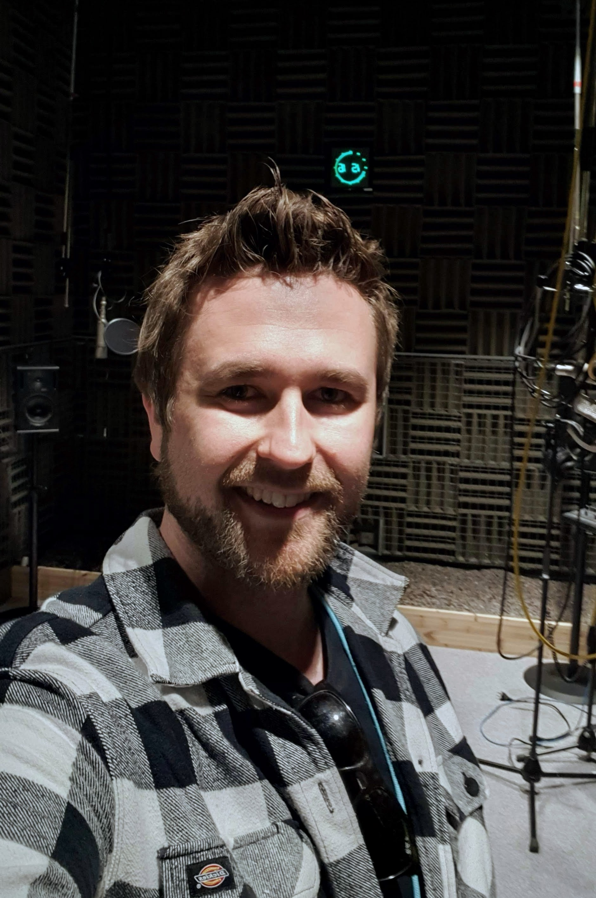

Tarinat äänellä
Stories in sound
Teen äänestä ja musiikista dramaturgiaa: sitä, miten tarina etenee ajassa, mihin kuulija kiinnittää huomionsa ja miltä hetki tuntuu. Kuulokkeisiin, näyttämölle, tilaan ja vuorovaikutteisiin maailmoihin.
I turn sound and music into dramaturgy: how a story moves in time, where the listener's attention goes and how a moment feels. For headphones, the stage, physical spaces and interactive worlds.
Mitä teen
What I do
Kuulokkeisiin
For headphones
Kuunnelmat · dokumentit · audiosarjat
Audio drama · documentary · series
Äänisuunnittelu, sävellys, editointi ja miksaus pitkiin audioteoksiin. Tarvittaessa myös dramaturgia, ohjaus ja kenttä-äänitys. Voin olla osa työryhmää tai vastata koko äänimaailmasta.
Sound design, original music, editing and mixing for long-form audio. Dramaturgy, direction and field recording when needed. I can join a team or take care of the whole soundworld.
Prix Europa 2022 · 2 × KOURA · 25+ Yle-tuotantoa / Yle productions
Näyttämölle
For the stage
Teatteri · tanssi · esitykset
Theatre · dance · performance
Äänisuunnittelu ja sävellys, jotka kulkevat dramaturgian rinnalla ensimmäisestä treenistä asti. Tilaääni, liveajo ja tekniikan suunnittelu.
Sound design and composition that grow alongside the dramaturgy from the first rehearsal. Spatial sound, live operation and technical design.
Åbo Svenska Teatern · Saimaan Teatteri · Q-teatteri · Teatteri Takomo
Tilaan
For spaces
Museot · näyttelyt · installaatiot
Museums · exhibitions · installations
Äänimaisemat, näyttelyaudio ja monikanavaiset ääniteokset, joissa tila on mukana soittamassa. Puheäänitykset ja kieliversiot omalla studiolla.
Soundscapes, exhibition audio and multichannel sound works where the space itself takes part. Voice recordings and language versions in my own studio.
Tiedemuseo Liekki · Museoiden yö, Mikkeli · Mikkelin Taidemuseo
Vuorovaikutteisiin maailmoihin
For interactive worlds
Generatiivinen ääni · pelit · omat työkalut
Generative sound · games · custom tools
Adaptiivinen musiikki, generatiiviset ääniteokset ja Max/MSP-ratkaisut, esimerkiksi esiintyjän liikkeellä ohjattu ääni.
Adaptive music, generative sound works and Max/MSP solutions, such as sound driven by a performer's movement.
Prix Europa -palkittu kuunnelmapeli · Max for Live -laitteet
Prix Europa-winning interactive audio drama · Max for Live devices
Studio Tuusulassa
Studio in Tuusula

Tarkkaamo ja erillinen soittotila
Control room and a separate live room
- Puheäänitykset, spiikit ja kieliversiot (suomi, ruotsi, englanti)
- Lukijoiden ja näyttelijöiden ohjaus
- Musiikkiäänitykset ja sävellystyö: syntikat, piano ja analogiset nauhakoneet
- Editointi, miksaus ja masterointi
- Voice recordings and language versions (Finnish, Swedish, English)
- Directing voice actors and readers
- Music recording and composition: synths, piano and analogue tape
- Editing, mixing and mastering
Opetus ja luennot
Teaching and talks
Opetan studiotyöskentelyä ja äänisuunnittelua, ja vierailen mielelläni kursseilla puhumassa äänidramaturgiasta ja dokumentaarisen materiaalin kanssa työskentelystä. (Taideyliopiston Teatterikorkeakoulu 2026.)
I teach studio work and sound design, and I'm happy to visit courses to talk about sound dramaturgy and working with documentary material. (Uniarts Helsinki, Theatre Academy 2026.)
Miten työskentelen
How I work
- Kuuntelen ensin. Mitä teos haluaa sanoa, kenelle ja missä se kuullaan.
- Selkeä tarjous. Kerron, mitä hintaan sisältyy, montako korjauskierrosta on mukana ja mitä sovitaan erikseen. Ei yllätyksiä kummallekaan.
- Teen ääni edellä. Kuulet suunnan aikaisin, jolloin muutokset ovat helppoja.
- Viimeistelen ja toimitan sovituissa formaateissa ja ajallaan.
- I listen first. What the work wants to say, to whom and where it will be heard.
- A clear quote. What's included, how many revision rounds and what's agreed separately. No surprises on either side.
- Sound first. You hear the direction early, while changes are still easy.
- Finished and delivered in the agreed formats, on time.
Kerro projektistasi
Tell me about your project
Muutama rivi riittää: mitä olet tekemässä, milloin ja missä se kuullaan.
A few lines are enough: what you're making, when, and where it will be heard.
jani.orbinski@gmail.com jani.orbinski@gmail.com